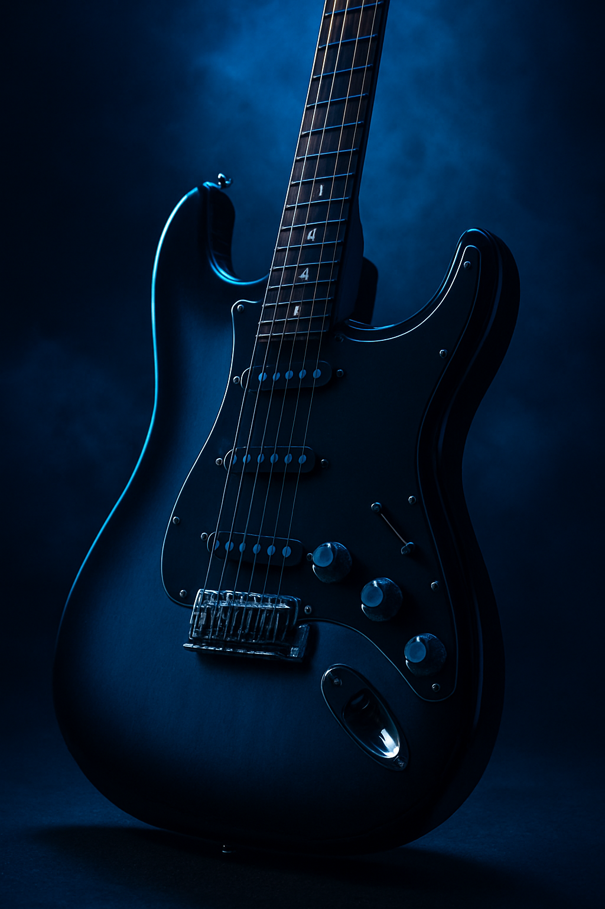
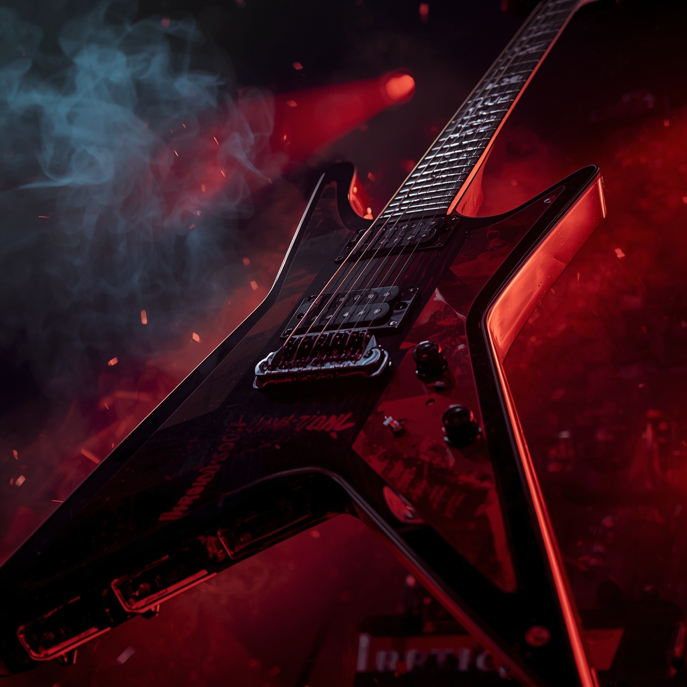

Kitaratyypit - Löydä oma äänesi

Kitaroita on monenlaisia, ja erilaiset kitara mallit luovat eri äänimaailmoja. Esittelen muutaman suosituimman tyypin, jotta tiedät, mikä voisi sopia sinulle parhaiten.
Akustinen - kitara

Akustinen kitara on klassikko, joka ei tarvitse vahvistinta. Esimerkiksi perinteinen folk-akustinen kitara sopii erinomaisesti aloitteleville soittajille, sillä kielet soivat selkeästi ja ääni kantaa hyvin. Se on täydellinen valinta sooloihin ja lauluun säestykseksi.
Sähkökitara - Stratocaster
Fender Stratocaster on yksi maailman tunnetuimmista sähkökitaroista. Sen kirkas, raikas sointu sopii moniin genreihin, bluesista rokkiin. Sähkökitara vaatii vahvistimen, mutta antaa soittajalle paljon äänisävyjä ja efekti-vaihtoehtoja.
Sähkökitara - Les Paul

Gibson Les Paul on toinen klassikko, jolla on paksumpi ja täyteläisempi soundi kuin Stratocasterilla. Se sopii erinomaisesti rokkiin ja metalliin. Raskas runko ja soinnin syvyys tekevät siitä monien kitaristien suosikin sooloihin.
Sähkökitara - Jackson
Jackson on suunniteltu nimenomaan metalli genreen. Tämä kitara sopii erityisesti niille, jotka haluavat soittaa kovaa, nopeasti ja täyteläisellä soundilla.
ToneUp-vinkki: Kokeile eri kitaroita, jos mahdollista, ja huomaa, miten eri kielet, rungot ja mikit vaikuttavat ääneen. Jokaisella kitaratyypillä on oma luonteensa!